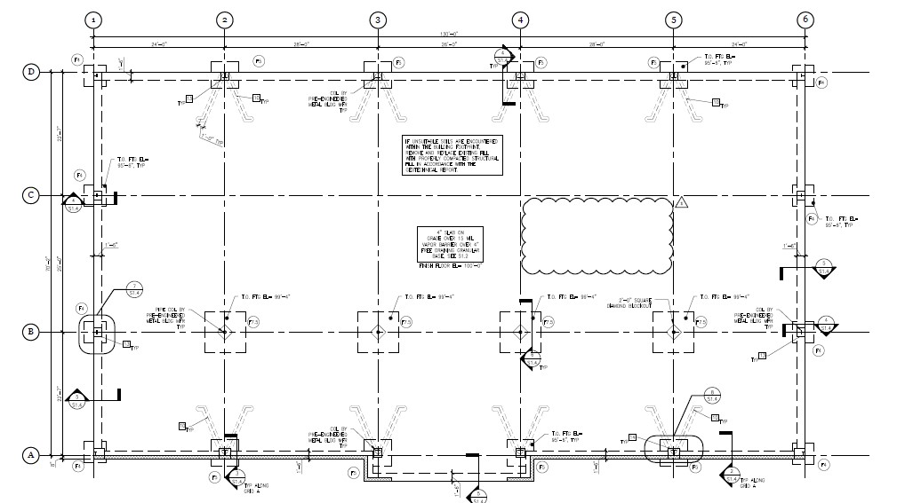
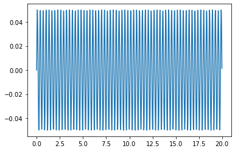

SDOF Undamped System under Free Vibration
Contents
SDOF Undamped System under Free Vibration¶
Import Necessary Packages and Functions¶
import numpy as np
from numpy import sqrt
from matplotlib import pyplot as plt
from math import pi
from IPython.display import Image
Design based on typical Dollar General. Column and roof sizing was estimated based on architectural sheets found at http://www.co.grant.mn.us/DocumentCenter/View/2819/Ashby-Dollar-Geneal-Design-Set-12-08-20?bidId=
Image("Floorplan.jpg")

Set Variable Values for System¶
#Variables
m = 1.55 #mass, k-sec^2/ft
k = 618 #stiffness, k/ft
wn = sqrt(k/m)
Tn=1/(wn/2/pi)
print("The structure's period is " + str(Tn) + ".")
The structure's period is 0.3146672030639164.
Establish Initial Conditions¶
F0=0 #no forcing function in free vibration
x0=0 #initial displacement
v0=1 # initial velocity
Setup Sampling Protocol¶
#Setup Sampling
T1=20 #duration of motion evaluation
deltaT=0.02 #time step
N=T1/deltaT #total number of time points
t=np.arange(0.0,T1,deltaT) #generate time vector
x = []
v = []
X = []
for ti in t:
x = (x0)*np.cos(wn*ti)+(v0/wn)*np.sin(wn*ti)
X.append(x)
Plotting the Resulting Displacement Response¶
plt.plot(t,X)
plt.show()
